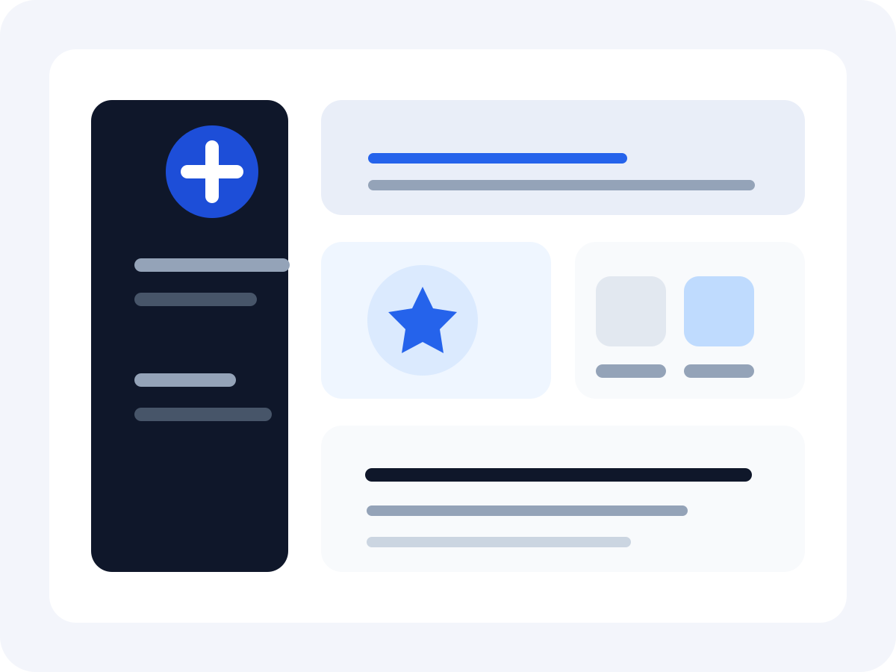

Leading the shift from traditional UX delivery to an AI-first operating model across a complex cybersecurity platform.

Over the past year I have led a deliberate transformation of how UX is practised across Sophos Central, our global cybersecurity platform. The ambition was not to bolt AI onto the existing workflow, but to rebuild the workflow around AI from the ground up.
The team has moved from producing pixel-perfect screens in Figma to orchestrating systems, patterns, and outcomes with AI as a core design partner. Designers now work upstream of the UI, shaping intent and governance, while AI accelerates the production work that once consumed most of our capacity.
This is a story about mindset and operating model, not tools. It is about how a mature UX organisation chose to lead the change rather than be reshaped by it.
Sophos Central is a deep, multi-product platform covering endpoint, XDR, and Security Operations. Our UX workflow had been built for a different era of SaaS delivery, and the constraints were becoming difficult to ignore.
Most UX work flowed through high-fidelity Figma mock-ups. Designers were the sole creators of UI, and every screen had to be hand-crafted before engineering could begin.
Product ambition consistently outpaced design capacity. Roadmaps were gated on pixel production, and the team spent more time executing than thinking about outcomes.
XDR and Security Operations introduced dense, analyst-grade workflows. Keeping experiences consistent across a growing platform, with a fixed team, was not sustainable.
The evolution of the Sophos design system alongside the Luna direction meant designers were reconciling two visual languages while still shipping daily product work.
Several forces arrived at the same time, and together they created a genuine strategic inflection point for the practice.
Claude, Cursor, and Figma Make matured quickly from novelty into tools that could credibly generate flows, layouts, and code-ready UI. The quality bar had shifted far enough that ignoring it would have been a leadership failure, not a virtue.
Product expectations kept rising while team size stayed flat. The only honest answer was a different operating model, not another push for overtime or another recruitment round.
XDR and Security Operations brought workflows that were data-dense, investigation-led, and highly domain-specific. They needed more systems thinking and less screen-by-screen invention.
The move toward Luna gave us a natural opportunity to rebuild delivery around a stronger, more componentised foundation, and to treat AI generation and design system adoption as a single programme of change rather than two separate efforts.
The decision was to lead the shift intentionally, set the direction for the team, and treat AI as a capability to be designed into the practice, not a trend to be reacted to.
The core move was a change in mindset. UX stopped starting in Figma and started starting with intent, guided through AI, and resolved against the design system. That single reordering of the workflow changed almost everything downstream.
We reframed AI from something designers occasionally reached for into a standing partner in the work. It sits at the beginning of the process, not the end. Briefs are written to it, critiqued with it, and refined through it before any pixel is drawn.
The quality of the output now depends on the quality of the brief. I introduced prompt quality as a core competency for the team, sitting alongside interaction design and systems thinking. A vague prompt produces a vague interface, and designers are accountable for both.
We introduced “prompt hygiene” as a shared discipline, covering how we structure intent, cite the design system, constrain outputs, and record what worked. It gives the team a common language for a new craft and stops AI work from becoming private experimentation.
The role of the designer shifted from creator of every screen to orchestrator of patterns, flows, and outcomes. The craft now sits in defining the system, curating the components, and judging what is good, not in redrawing the same UI for the hundredth time.
I led hands-on enablement across the team, covering Cursor for AI-assisted development, structured prompting, and the use of AI to generate flows, layouts, and code-ready UI against our components. The focus was on real work, not demos.
With the design system and AI working together, low-complexity UI creation is no longer exclusive to designers. PMs can now assemble straightforward screens from approved components, with AI doing the heavy lifting, freeing designers to focus on the harder, system-level problems.
Opening up production needed a clear governance model. UX retains sign-off on quality, accessibility, and platform consistency, and every AI-generated output must align with the design system. The aim is not gatekeeping, it is protecting the bar while letting more people contribute.
The new workflow is deliberately ordered. Intent leads, AI accelerates, the design system constrains, and UX judgement resolves. Production is no longer the slowest part of the process.
Frame the problem, the user outcome, and the success criteria before anything visual is produced.
Use AI to rapidly produce concepts, flows, and layout options, widening the solution space in hours, not weeks.
Apply design system components, patterns, and tokens so outputs are consistent, accessible, and buildable.
Designers critique, edit, and resolve the work, bringing domain understanding and interaction craft to bear.
Ship higher-fidelity, closer-to-code outputs, shortening the distance between design intent and engineering reality.
Validate richer prototypes with real users earlier in the cycle, so we learn from behaviour, not just opinion.
To make the new workflow practical at scale, we have been building light-touch internal tools that reinforce the operating model rather than replace it.
An internal utility for assembling UI from pre-built, approved components, so PMs and designers can move from intent to a usable layout in minutes without stepping outside the system.
A lightweight browser extension that inspects in-product UI against design system rules, giving fast, objective feedback on consistency and surfacing drift before it compounds.
These tools are enablers, not the story. They exist to make the new way of working obvious and easy, and to keep quality high as more people contribute to the UI.
UX has shifted from being the rate-limiting step in delivery to an enablement function. Designers spend less time producing screens and more time shaping systems, outcomes, and the work of others.
Iteration cycles are materially shorter, and consistency across Sophos Central has improved as AI-generated work is anchored to the design system by default rather than by convention.
The team can now put richer, more realistic prototypes in front of users far earlier in the process, which has improved the quality of research and the confidence of product decisions.
With a shared operating model and shared tooling, PMs contribute more directly to UI, engineers receive outputs closer to code, and UX is free to lead at the level where it adds the most value.
AI-assisted, component-based outputs are moving us toward a model where the distinction between design artefact and production UI narrows, and UX shapes the system that generates the product rather than each screen within it.
In cybersecurity, the interface has never been the product. What matters is the decision, the investigation, and the outcome. As AI takes on more of the analysis, the UI itself will become less central, and in many workflows it will shrink, fade, or disappear entirely in favour of direct, AI-driven interactions.
That is not a threat to UX. It is a clarification of what UX is for. The craft moves further upstream, into defining the systems that generate experiences, shaping the behaviours those experiences create, and governing how AI behaves on behalf of the user.
The designers who thrive in this next era will not be the ones who draw the prettiest screens. They will be the ones who can frame intent clearly, reason about systems, and hold the quality bar for experiences that are increasingly generated rather than authored.
The transformation at Sophos has been the first deliberate step toward that future. The work is not finished, and it was never meant to be a project with an end date. It is a new way of leading UX, and one I intend to keep pushing forward.